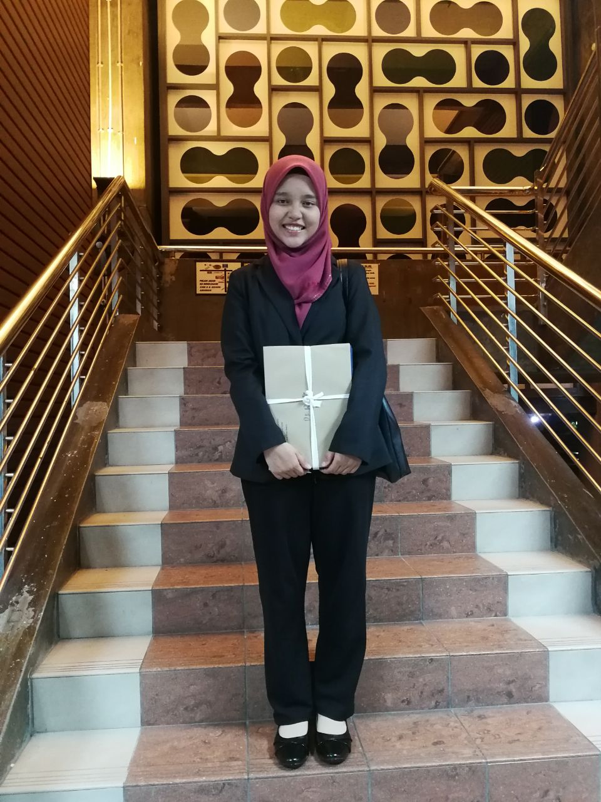
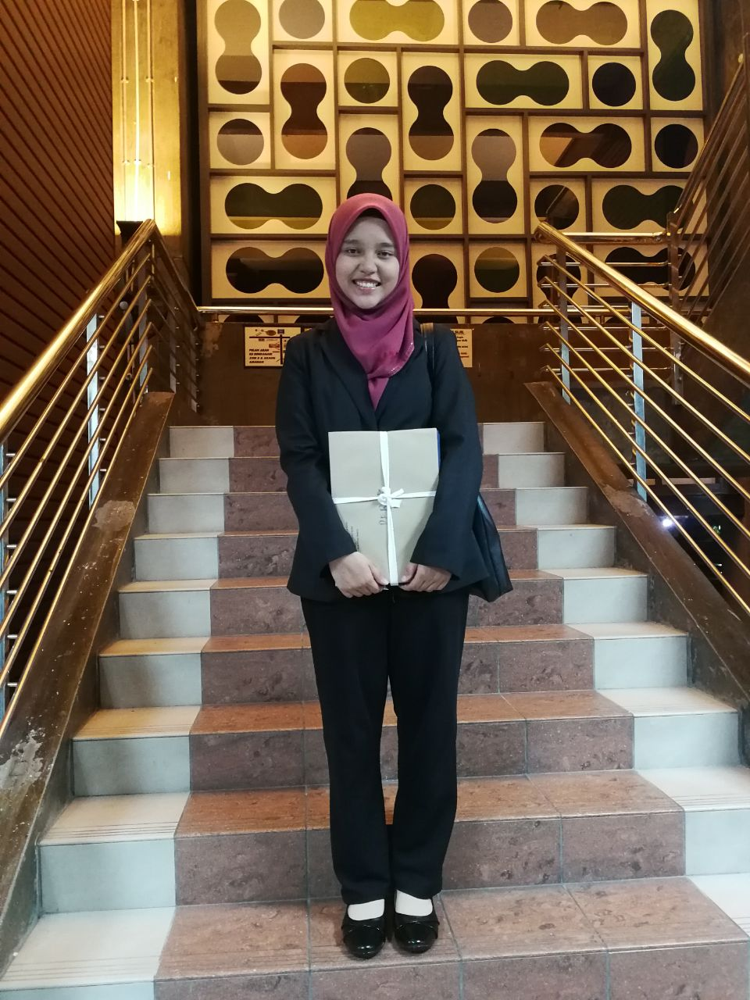
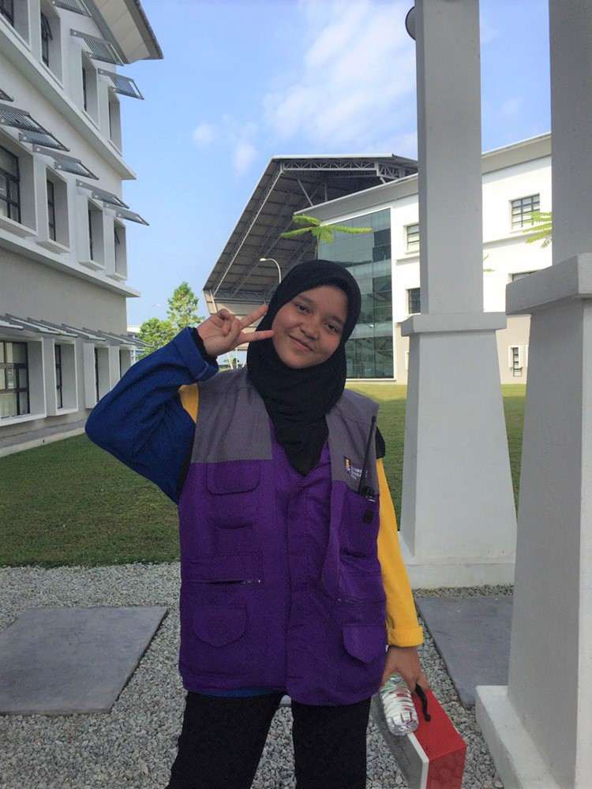
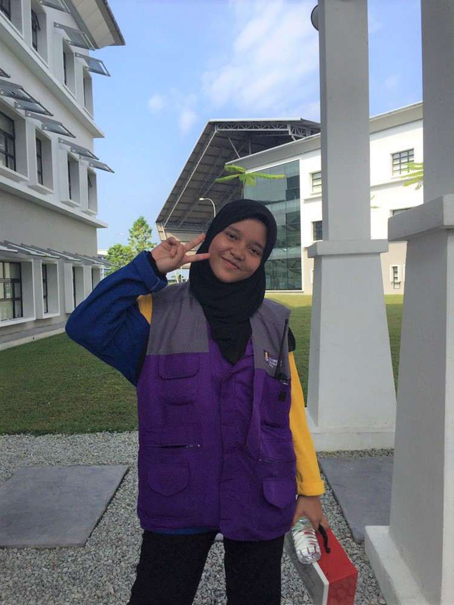

Enjoy Life #HappyLifeHappySelf
Life is a Journey
Life is a journey filled with lessons, hardships, heartaches, joys, celebrations and special moments that will ultimately lead us to our destination, our purpose in life. The road will not always be smooth. In fact, throughout our travels, we will encounter many challenges. No matter how many you fall, fail, get up, do it again and repeat it.
Some of these challenges will test our courage, strengths, weaknesses, and faith. Along the way, we may stumble upon obstacles that will come between the paths that we are destined to take. In order to follow the right path, we must overcome these obstacles. Sometimes these obstacles are really blessings in disguise, only we don't realize that at the time.
Let's get to know me better
My Biodata
Hi, I’m Siti Nursyahira Nor Azmi. I'm 22 years old. I'm a person who easily gets used to anyone even if I am in a new place. Because I like to meet new friends to expand my network.
I am a person who loves the world of leadership. I love to be led and lead. I love when faced with various problems and slowly land learning to solve them well without prioritizing emotions.
I am a cheerful person, can work in a team and can do multiple tasks at one time. I made a lot of mistakes in the past. So I took all the mistakes as a lesson for my future to be my better version.
Little bit about my education
My Education
Currently, I'm study as student of Bachelor in Business Administration (Hons) Marketing from UiTM Kota Bharu, Kelantan. Previously, I took a Diploma in Accounting Information System at UiTM Tapah, Perak.
I was very happy with what I learned because it was all my passion.

UiTM Kota Bharu, Kelantan
UiTM Tapah,Perak
My life's journey
My Experience
In life, of course each of us has their own experiences. The only thing that differentiates us is whether the experience is beautiful or bad. The beautiful will be a beautiful memory. Even the bad will be a lesson. Just like me, I have some memories of my own.
So far, during the 22 years of my life, there are too many memories that I will never forget especially when I studied at UiTM Tapah, Perak. There, I made many friends, participated in various association activities and got involved in leadership that has been my passion since I was in primary school.
Among my involvement during the diploma was, joining the Accounting Information Systems Association and holding the position of Multimedia Exco. In addition, I also held the position of the Beta College Representative Committee and served as the Cultural Exco. And the last position before I left UiTM Tapah was as the Student Representative Council and held the position of Secretary General. Not only that, I am also involved in the sport of Persatuan Pencak Silat, which is playing in the position of solo silat art.The video below is a video of my memories during my studies at UiTM Tapah, that is when I continued my studies at the Diploma level
I present for you my family members
My Family, My Life
Family is everything, so sometimes it can be hard to put into words how much my love means to me.It is unconditional love because family is like a branch on a tree. We grow in many directions yet our roots remain one.
.jpg)
 

.jpg) 

.jpg)
.jpg)
.jpg)